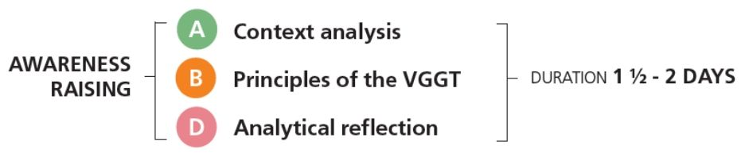
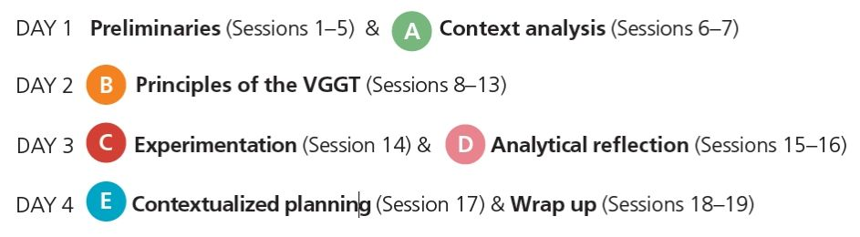

All elements of the learning programme are essential to achieve these learning goals:
- Understand the background and the process of development of the Voluntary Guidelines;
- Explain the main topics covered by the Voluntary Guidelines;
- Identify the main actors and their respective roles in tenure governance;
- Assess the local tenure situation and conduct analyses of specific cases in the country;
- Identify potential solutions to improve the tenure governance in the country;
- Apply the Voluntary Guidelines to prepare an agenda for action by CSOs to implement theVoluntary Guidelines.
The learning programme, however, has been designed in a modular way, so you can adapt it to your specifictraining needs.
In fact, the five elements of the methodology can be fully or partially implemented, depending on the objectives you want to reach, the time and resources available.
We suggest a 4-day schedule comprising 19 sessions to cover all of the core elements, so that you can achieve all learning goals.
What is your objective?
SENSITIZATION
If you just want to inform your participants on the Voluntary Guidelines, and you don’t have more than one day available, you could implement the following elements:
AWARENESS RAISING
If your goal is to inform your participants about the Voluntary Guidelines, to enable them to apply their principles on their country context, you could implement the following elements:

CAPACITY BUILDING
If you want to build capacities of your participants so that they can apply the Voluntary Guidelines to their own country context successfully, and they are able to design an action plan, you could implement the following elements:

Click on each option to discover more.
The content of your modal.
Context analysis: This is the foundation of the whole training, on which all other elements will buildon. Participants share tenure-related cases that they know of, or have experienced, and thatrepresent a challenge for them
and their communities. Once all participants have shared their cases,they will select in plenary 2-3 cases that best represent the main tenure challenges of their country.
Principles of the VGGT: After analysing the context, participants explore the rationale and theprinciples of the Voluntary Guidelines, which will strengthen their knowledge on how the VoluntaryGuidelines can support them in
implementing a responsible governance of tenure of land, fisheriesand forests in the local context.
Experimentation: In this element, participants put the principles into practice by directly applying inrole-play situations what they have learned.
Analytical reflection: Through the analytical reflection, participants gain a common understandingon the tenure governance in their country. Then, they use the principles of the Voluntary Guidelinesand their practical experience
in the role-play to analyse the case studies that they have selected inthe context analysis.
Contextualized planning: Finally, participants have the opportunity to contextualize what they havelearned, and to develop an action plan tailored to their organization.